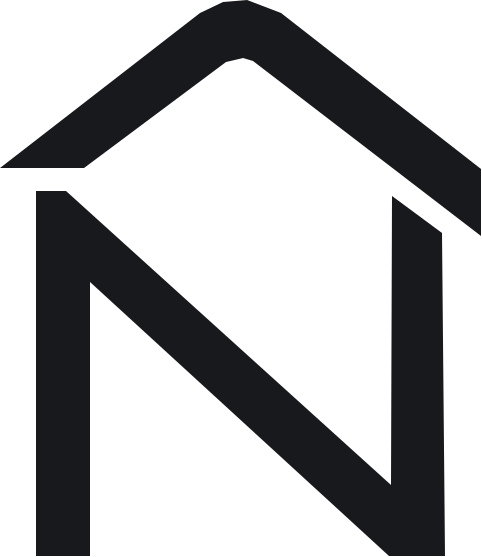

Co obsahuje?
Kompletně popsaný zjištěný stav v technické zprávě, včetně půdorysů, řezů a pohledů.

DANIEL NOVÁK PASPORTYZaměřím objekt a připravím dokumentaci skutečného stavu.
Nejdříve společně projdeme, co potřebujete a jaký bude rozsah zakázky. Poté objekt zaměřím a podle zjištěného skutečného stavu zpracuji potřebnou dokumentaci. Hotové podklady vám následně předám v digitální podobě.
Pasportizace je dokumentace skutečného stavu existující stavby. Zachycuje její současné uspořádání a základní stavební řešení v době zaměření.
Kompletně popsaný zjištěný stav v technické zprávě, včetně půdorysů, řezů a pohledů.
Například když původní dokumentace chybí, není aktuální nebo potřebujete mít současný stav přehledně zachycený.
Přehledné digitální podklady, které můžete dále využít podle své potřeby.
Probereme objekt, vaše požadavky a představu o rozsahu zakázky.
Na místě zaměřím skutečný stav objektu a pořídím potřebné podklady.
Podklady zpracuji do přehledné dokumentace skutečného stavu.
Hotovou dokumentaci předám v digitální podobě.
Ukázky výkresů z reálného zpracování skutečného stavu.
Projdeme si vše, co bude třeba, zodpovím vaše otázky a domluvíme se na konkrétním rozsahu práce. Cílem je, abyste přesně věděli, co ode mě dostanete a jak bude celý proces probíhat.
Rád s Vámi proberu Vaše otázky týkající se pasportizace nebo společně projdeme poptávku na zpracování dokumentace. Napište mi, o jaký objekt jde a co potřebujete vyřešit. Fotografie nebo staré výkresy můžete přiložit rovnou k poptávce.
Nezávazně · fotografie jsou vítané